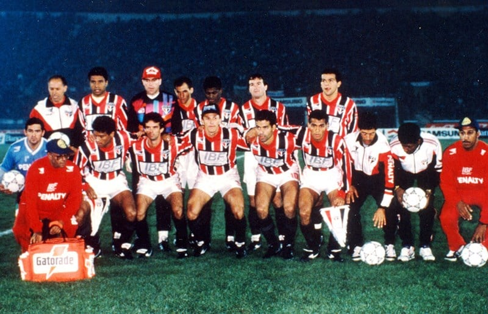

O São Paulo Futebol Clube também construiu sua grandeza a partir de uma trajetória vitoriosa nas
competições estaduais e interestaduais. No cenário paulista, o Tricolor é um dos maiores campeões
do
Campeonato Paulista, com conquistas em diferentes décadas, sempre protagonizando rivalidades históricas
e revelando grandes jogadores. Além disso, o São Paulo também brilhou em torneios interestaduais,
como o
Torneio Rio-São Paulo, competição que reunia as principais forças do futebol do Sudeste.
Campeonato Paulista
São Paulo campeão paulista de 1957
O Clube da Fé se saiu campeão do Campeonato Paulista por 22 vezes: (1931, 1943, 1945, 1946, 1948,
1949,
1953, 1957, 1970, 1971, 1975, 1980, 1981, 1985, 1987, 1989, 1991, 1992, 1998, 2000, 2005, 2021).
"Onde a moeda cai em pé"
Reza a lenda que na reunião do conselho arbitral que definiria o regulamento do Campeonato Paulista de
1943, os presidentes dos times debateram normas e mais normas, detalhes após detalhes quando, encerrada
a discussão, um dirigente ou repórter teria afirmado que tudo aquilo não seria necessário, que bastaria
jogar ao ar uma moeda para definir o vencedor daquele ano. Se ao cair desse cara, o campeão seria o
Corinthians, se desse coroa, o Palmeiras. Até que foi perguntado: "Mas e o São Paulo?" - Muitas
versões diferentes existem a partir daqui. Em uma das histórias, um dos cartolas rivais ou dos
jornalistas presentes teria afirmado: “Só se a moeda cair de pé!”. Então, no dia 3 de Outubro de
1943, numa partida contra o Palmeiras em pleno Pacaembu, a moeda caiu em pé! Após empate em 0x0, o
Tricolor sagrou-se campeão paulista de 1943, contrariando todas as expectativas!
São Paulo campeão paulista de 1943
Torneio Rio-São Paulo
O Tricolor Paulista sagrou-se saiu campeão do Torneio Rio-São Paulo no ano de 2001, título marcado pelo
jogo final contra o Botafogo no Morumbi. A partida realizada no dia 7 de Março de 2001 ficou
caracterizada pelos gols do jovem Kaká, que entrou no 2º tempo, marcou duas vezes e virou o jogo para o
Tricolor.
São Paulo campeão do Torneio Rio-São Paulo de 2001
Títulos Nacionais
No cenário do futebol brasileiro, o São Paulo Futebol Clube é sinônimo de tradição, regularidade e
conquistas expressivas. Ao longo das décadas, o Tricolor se destacou nas principais competições
nacionais, consolidando-se como um dos clubes mais vencedores do Brasil. Esses títulos representam
a força do São Paulo em diferentes eras, com elencos históricos, treinadores consagrados e uma torcida
apaixonada que sempre empurrou o time nos momentos decisivos.
Campeonato Brasileiro
São Paulo campeão brasileiro de 1991
O Tricolor do Morumbi conquistou a taça do Campeonato Brasileiro em 6 oportunidades: (1977, 1986, 1991,
2006, 2007, 2008).
Tricampeonato Brasileiro
O São Paulo é dono de um feito único no futebol brasileiro: O único time a ganhar o Brasileirão 3 vezes
de forma consecutiva. Nos anos de 2006, 2007 e 2008, o time comandado por Muricy Ramalho e
estrelado por
Rogério Ceni, Miranda e companhia, conquistou o título de campeão brasileiro e escreveu seu nome nos
livros de história do futebol nacional como primeiro e, até o momento, único tricampeão brasileiro
consecutivo.
São Paulo campeão brasileiro de 2008 e tricampeão brasileiro consecutivo
Copa do Brasil
O Mais Querido sagrou-se campeão da Copa do Brasil uma vez no ano de 2023.
O Título Que Faltava
O Clube da Fé conquistou quase todos os títulos possíveis no futebol brasileiro e faltava somente 1 para
completar a galeria tricolor: a Copa do Brasil. Foi então que no ano de 2023, a equipe treinada por
Dorival Júnior e que contava com Calleri, Lucas Moura, Arboleda, entre outros, conquistou a tão sonhada
taça da Copa do Brasil.
São Paulo campeão da Copa do Brasil 2023
Supercopa do Brasil
O São Paulo conquistou a Supercopa do Brasil em uma oportunidades em 2024.
"Campeão de Tudo"
Ao conquistar a Copa do Brasil de 2023, surgia mais um desafio ao Tricolor Paulista para se tornar,
definitivamente, campeão de tudo: a Supercopa do Brasil. Numa partida acirrada contra o rival
Palmeiras, o Tricolor se tornou supercampeão do Brasil ao superar o alviverde nos pênaltis por 4x2, após
0x0 no tempo normal.
São Paulo campeão da Supercopa do Brasil 2024
Títulos Internacionais
O São Paulo carrega o título de maior campeão internacional do país com incríveis 12 títulos.
Dentre os outros que serão citados, destacam-se também: 2x Recopa Sul-Americana (1993, 1994); 1x
Supercopa Libertadores (1993); 1x Copa Conmebol (1994); 1x Copa Master da Conmebol (1996).
Libertadores da América

São Paulo campeão da Copa Libertadores da América de 1993
O Tricolor do Morumbi tem em sua coleção 3 taças dessa competição, conquistadas nos anos de 1992, 1993 e
2005.
O primeiro tricampeão da américa no Brasil
O Clube da Fé atingiu o feito de ser o primeiro clube brasileiro tricampeão da Libertadores ao
conquistar o torneio em 2005, quando a equipe dirigida por Paulo Autuori e capitaneada por Rogério Ceni
bateu o Athletico-PR por 4x0 no jogo de volta no Morumbi.
São Paulo campeão da Copa Libertadores da América de 2005
Mundial de Clubes
São Paulo campeão mundial de 1993
O São Paulo conquistou o mundo por 3 vezes nos anos de 1992, 1993 e 2005 derrotando Barcelona, Milan e
Liverpool, respectivamente.
"Se for para ser atropelado, que seja por uma Ferrari"
Em 1992, o Tricolor foi ao Japão disputar pela primeira vez o Mundial de Clubes e seu oponente era o
temido Barcelona treinado por Johan Cruyff e que tinha em seu plantel grandes jogadores como o zagueiro
holandês Koeman, o zagueiro espanhol Guardiola (Atualmente grande treinador) e o atacante búlgaro
Stoichkov. O clube paulista venceu a partida por 2x1 com gols 2 gols marcados por Raí. Stoichkov
diminuiu para os espanhóis. Após a partida, o treinador Johan Cruyff fez a seguinte declaração: 'Se
for para ser atropelado, que seja por uma Ferrari. O São Paulo jogou como legítimo campeão do mundo.'
São Paulo campeão mundial de 1992
Um é pouco, dois é bom, três só o São Paulo
Em 2005, O São Paulo foi até o Japão pela terceira vez enfrentar o campeão europeu Liverpool de Steven
Gerrard O São Paulo saiu campeão batendo o time inglês por 1x0 com gol de Mineiro. Vale
lembrar também da defesa que palavras não conseguem descrever do nosso M1TO na batida de falta de
Gerrard.
São Paulo campeão mundial de 2005Defesa de Rogério Ceni após falta cobrada por Steven Gerrard
Copa Sul-Americana
O Tricolor do morumbi conquistou a Copa Sul-Americana em uma oportunidade no ano de 2012. O time de Ney
Franco contava com Rogério Ceni e o Made in Cotia Lucas Moura em sua partida de despedida antes de ir ao
francês Paris-Saint Germain. O Mais Querido venceu o Tigre, da Argentinta, numa final emblemática
em que os argentinos, na partida de volta marcada por uma grande confusão, não retornaram a campo após o
intervalo e o São Paulo foi declarado campeão.